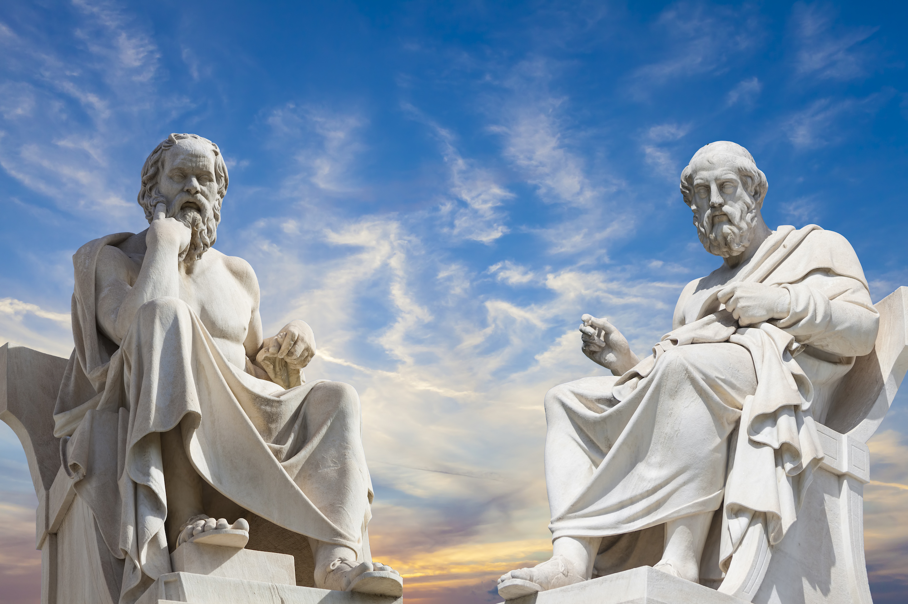
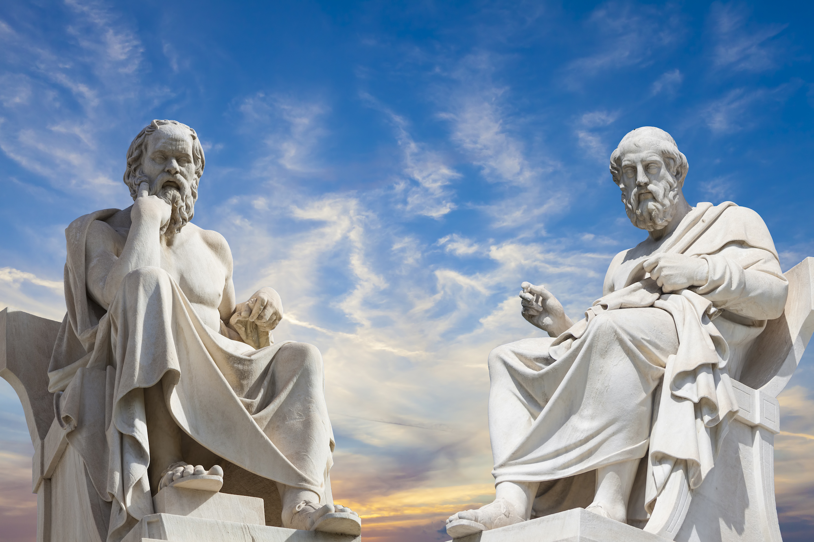

Learnings on Science, Technology, and Society
by: lorenz ciocon
🞃
This module includes the technological contributions of different civilizations specifically the Sumerian, Egyptian, Babylonian, Greek, Roman, and Chinese. I learned about how each civilization contributed to society in terms of its technological innovations.
To go more in-depth into each of these civilizations, each civilization has unique technological contributions. The Sumerian civilizations were the first to use Bronze, Tin, and Copper in their inventions. They also invented the first writing system using clay tablets, Cuneiform. The Egyptian Civilization is known for its pyramid building because it built palaces and temples using granite to worship its gods. The Babylonians are known for being the first builders, engineers, and architects through their innovations. The Greeks contributed to the field of Science, Mathematics, and Technology, and are also known for their sophisticated sculptures. The Romans were the first to use concrete in their construction. The significant contribution of the Chinese civilization was the creation of Gunpowder which is still used today.
Reflection: All of these civilizations have technological innovations that contributed to society until today. Their inventions served as the building blocks of future technological advancements because ancient civilizations invented the predecessors of modern-day technology. I also noticed that each civilization has different versions of the same things like the Sumerians creating irrigation and the Babylonians being the first engineers. The civilizations have something in common with each other.
 

This module includes different intellectual discoveries specifically about our universe and its origin. I learned about the discoveries of different philosophers and scientists on the truth about our world, and universe
The lesson first starts with the oldest intellectual discovery made by Aristotle. He believed that the Earth was the center of the universe which contains a series of spheres that are made up of four elements, Earth, Water, Air, and Fire. This discovery was then proved wrong by Nicolaus Copernicus because he believed that the Sun was the center of the universe due to the contributions made by Johannes Kepler and Galileo Galilei. All these led to the discovery of the Big Bang Theory. The Big Bang Theory theorizes that all matter in the universe is made of one singular infinite dense particle
Reflection: Based on what I’ve learned from this lesson, I can say that these discoveries although intangible, have shaped our knowledge of our planet and universe. They are intellectual innovations that happened hundreds of years ago but still hold up until today.
The next module is about Darwin’s Theory of Evolution. I learned about Charles Darwin and the book that he wrote, “On the Origin of Species”, which talks about species evolving. According to Darwin, he defined evolution as descent with modification. He implies that current versions of species come from previous versions but with some changes, and that all can be traced back to a common ancestor. Natural selection was also addressed in this module. It is the process through which populations adapt and change over time. There are four propositions underlying Darwin’s theory of evolution through natural selection. The first is that more individuals are produced that can survive. The next is that there is a struggle for survival. Third, individuals in species show variation from each other. The last proposition is that offspring inherit their parent’s traits.
Reflection: Based on what I’ve learned from this lesson, I can say that curiosity is really the driving force of science and innovation because if Darwin wasn’t curious, there would be no Theory of Evolution, and maybe we would still be thinking differently on where we come from today.

This lesson is about climate change and how it affects the environment. I learned about what causes climate change and the effects it has on the environment. Climate change basically is caused by the Greenhouse effect. The greenhouse effect is where heat is trapped in the Earth which causes sea levels to rise because of the melting ice. Changes in the sun, orbit, and clouds are what cause climate change.
Reflection: Based on what I’ve learned on this topic, I can say that Climate change is definitely not stopping anytime soon but we can slow it down. I’ve learned to care more for our environment, and how we can lessen the effects of climate change.


This lesson is about Ecology and Biodiversity. I learned that Ecology is the study of organisms and how they interact with the environment. This lesson dove deeper into ecosystems. I learned that there are two factors in ecosystems which are the Biotic or living factor and the Abiotic or the non-living factor. Both of these factors combine to form an ecosystem. I also learned that Biodiversity means the diversity of life and that there are three classifications of biodiversity which are Genetic Diversity, Species Diversity, and Ecosystem Diversity.
Reflection: This lesson is about the study of living things and their characteristics. I can reflect that learning about them felt good because its important to understand the connections between organisms and their environment to deepen our knowledge and understanding of the world around us.